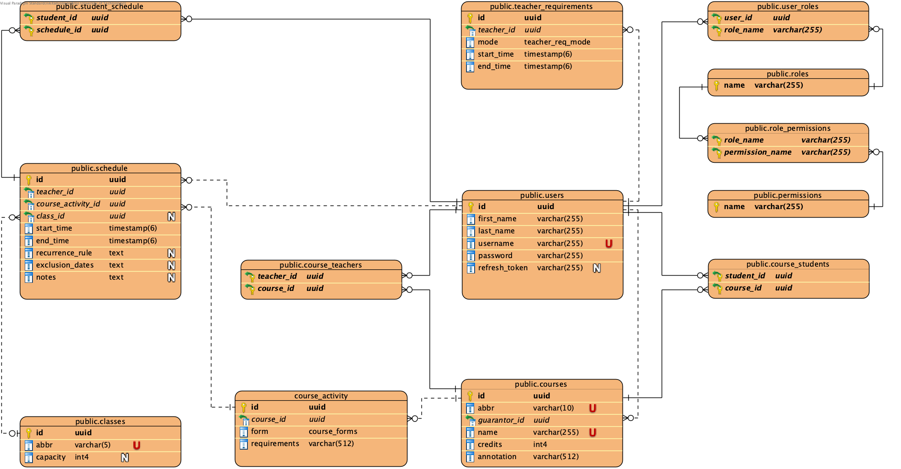

| Login | Heslo | Role |
|---|---|---|
| admin | password | ADMIN |
| john.smith | password | GUARANTOR |
| jane.doe | password | GUARANTOR |
| teacher.one | password | TEACHER |
| teacher.two | password | TEACHER |
| teacher.three | password | TEACHER |
| teacher.four | password | TEACHER |
| scheduler.one | password | SCHEDULER |
| student.one | password | STUDENT |
| student.two | password | STUDENT |
| student.three | password | STUDENT |
| student.four | password | STUDENT |
| student.five | password | STUDENT |
Pøilo¾te odkaz na komentované video demostrující pou¾ití informaèního systému. Zamìøte se na pøípady u¾ití definované zadáním (napø. registrace u¾ivatele, správa u¾ivatelù a èinnosti jednotlivých rolí). Video nahrajte napøíklad na VUT Google Drive, kde ho bude mo¾né pøímo spustit z odkazu.
Pro implementaci backendu je pou¾íván framework napsaný v NodeJS s názvem NestJS a ORM knihovna TypeORM. Systémové entity jsou definovány pomocí tøíd a dekorátorù, které specifikují konkrétní pole entit a jejich vlastnosti. Tyto entity jsou následnì propojeny s databází pomocí TypeORM.
V rámci NestJS je mo¾né vytváøet moduly pro ka¾dou entitu, co¾ zlep¹uje modularitu a pøehlednost kódu. Ka¾dý modul se skládá ze dvou hlavních èástí: servisu a kontroléru.

Tímto zpùsobem je dosa¾eno oddìlení zodpovìdností a strukturování kódu do modulù, co¾ zvy¹uje pøehlednost, udr¾itelnost a efektivitu pøi vývoji.
K urèení úrovní pøístupu u¾ivatelù se pou¾ívá systém ABAC (Attribute based access control). Tento vzor má výhody oproti systému RBAC (Role based access control) díky své flexibilitì. Tato výhoda napøíklad umo¾nila pohodlnì implementovat pøístup garantù k editaci kurzù pouze v pøípadì, ¾e se ID garanta shoduje s ID u¾ivatele, který po¾aduje úpravu.
Na základì role u¾ivatele a jeho atributù je diferencován pøístup k zdrojùm a provádìno filtrování. Napøíklad, kdy¾ student po¾aduje prvky rozvrhu, v¹echny prvky jsou filtrovány a vráceny jsou pouze ty, které jsou relevantní pro konkrétního studenta na základì jeho zápisu.
Rozvrh má od 0 do N záznamù pro ka¾dou aktivitu kurzu. Ka¾dou aktivitu kurzu musí být mo¾né v rozvrhu opakovat. K implementaci této funkce se pou¾ívá pravidlo opakování ze standardu RFC5545 (https://datatracker.ietf.org/doc/html/rfc5545). Tato funkce umo¾òuje nastavit flexibilní pravidla pro opakování urèitého prvku rozvrhu.
Frontend aplikace vyu¾ívá framework React a knihovny Material UI, react-query, DevExpress a query search.
Postgres byl vybrán jako databázový stroj, proto¾e má v¹echny potøebné funkce pro realizaci projektu.
Databáze obsahuje celkem 13 entit, z nich¾ 5 slou¾í k definici vztahù typu ManyToMany, zatímco zbylých 8 entit pøedstavuje sémantické komponenty aplikace, jako jsou kurzy, u¾ivatelé, tøídy atd.
Pou¾ití databázových triggerù je zdùvodnìno snahou udr¾et konzistenci dat v databázi. V pøípadì výskytu chyby pøi provádìní triggerù nedojde k modifikaci dat, která vyvolala spu¹tìní triggerù. Tímto zpùsobem je zaji¹tìna bezpeènost a integrita dat v pøípadì neèekaných událostí.
Databázové triggery jsou implementovány k tomu, aby se pøede¹lo nekonzistencím a udr¾ela integrita dat. Pøi chybì v provedení triggeru zùstanou data nedotèena, co¾ zabraòuje ne¾ádoucím následkùm. Tato opatøení jsou klíèová pro zaji¹tìní spolehlivosti a stability aplikace pracující s danou databází.
Projekt se skládá ze tøí vrstev (tier). První vrstvou je databáze. Druhou vrstvou je serverová vrstva (aplikaèní backend). Tøetí vrstva je vrstva klienta (frontend aplikace).
Ka¾dá èást (Tier) aplikace je pøipravena pro osobní pou¾ití pomocí docker kontejnerù.
Aplikace vyu¾ívá tøi kontejnery:
Celou aplikaci lze spustit pomocí docker compose.
Ke spu¹tìní databáze staèí zadat obraz aplikace. Kdy¾ spustíte kontejner s databází, obsahuje ji¾ v¹echny potøebné migrace a také pøeddefinovaná data pøidaná pro úèely testování. Ke spu¹tìní je tøeba zadat obraz aplikace a také promìnné prostøedí s daty pro pøipojení k databázi a parametry serveru pro aplikaci (datum vypr¹ení platnosti tokenu, klíè generování tokenu atd.).
Chcete-li spustit frontend, musíte zadat obráz frontendu a také pomocí promìnné prostøedí urèit hostitele, který se má pøipojit k backendu. Pøi pou¾ití jednoho souboru docker compose pro v¹echny tøi èásti staèí zadat název kontejneru s backendem.
Po¾adavky na software: docker >= 4.0.0
V¹echny úkoly byly splnìny.
Pøi vývoji aplikace jsme se sna¾ili pokrýt v¹echny po¾adavky na backendu a pøípady pou¾ití na frontendu. Existuje v¹ak riziko neoèekávaného chování.
Chyba by mohla naru¹it testování, úplnì vypnout backend. Aplikace bì¾í v systému Kubernetes DevOPS s obrazy tøí vrstev: databáze, frontendu a backendu. Restart kontejnerù umo¾òuje testování s dostupnými daty.
Pro restart kontejnerù je v horním pravém rohu frontendu tlaèítko nastavení, které umo¾òuje manipulovat s kontejnery bez oprávnìní. Tato metoda by mìla vyøe¹it problémy bìhem testování.
V pøípadì neúspìchu je k dispozici kopie aplikace na jiném serveru na adrese backup.iis.settler.tech, nezávislém na pùvodním serveru pro testování.